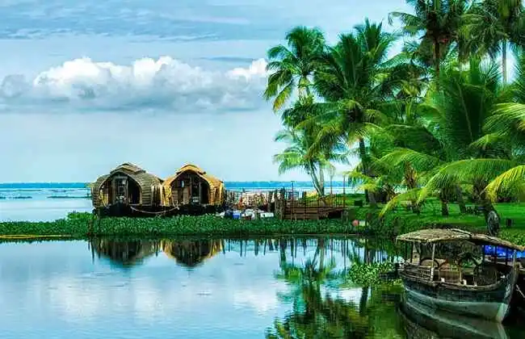

Kerala
"God's Own Country"
Quick Facts
Popular Tourist Attractions

Alleppey Backwaters
Known for serene houseboat cruises and lush paddy fields.

Munnar
Hill station with sprawling tea gardens and misty landscapes.
Kumarakom
Scenic village famous for its bird sanctuary and lake views.
Nature & Wildlife
Kerala hosts rich biodiversity through Periyar and Silent Valley national parks, home to tigers, elephants, and rare bird species.
Famous Personalities
- Dr. A.P.J. Abdul Kalam: Former President of India (born in Rameswaram but strong ties in Kerala).
- Arundhati Roy: Booker Prize-winning author.
- Yesudas: Legendary classical singer.
Local Handicrafts
Famed for coir products, mural paintings, Aranmula mirrors, and Kathakali masks.
Climate
Equatorial tropical climate with heavy monsoons and lush green surroundings almost year-round.
Culture & Festivals
Folk Dance & Music
Kathakali, Mohiniyattam, and traditional Sopanam music are integral to Kerala’s culture.
Festivals
Onam, Vishu, and Thrissur Pooram are celebrated with grandeur and rituals.
Cuisine
Known for Kerala Sadya, Puttu-Kadala, Appam with stew, and Malabar biryani.
Clothing
Traditional attire includes Kasavu sarees for women and Mundu for men.
Did You Know? Kerala is the first state to achieve 100% literacy and has the highest Human Development Index in India.
Note: Information may be subject to updates. Kindly notify us of any discrepancies.